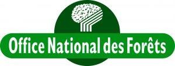

Rapport d'alternance
Développement d'applications web et autres réalisations pour l'aide à la gestion de forêts
Licence Professionnelle
SIG-WEB
Responsable de formation / Tuteur
- Isabelle UFARTE
ALTERNANT
- Jéros
Maître d'apprentissage
- Nicolas LANDES